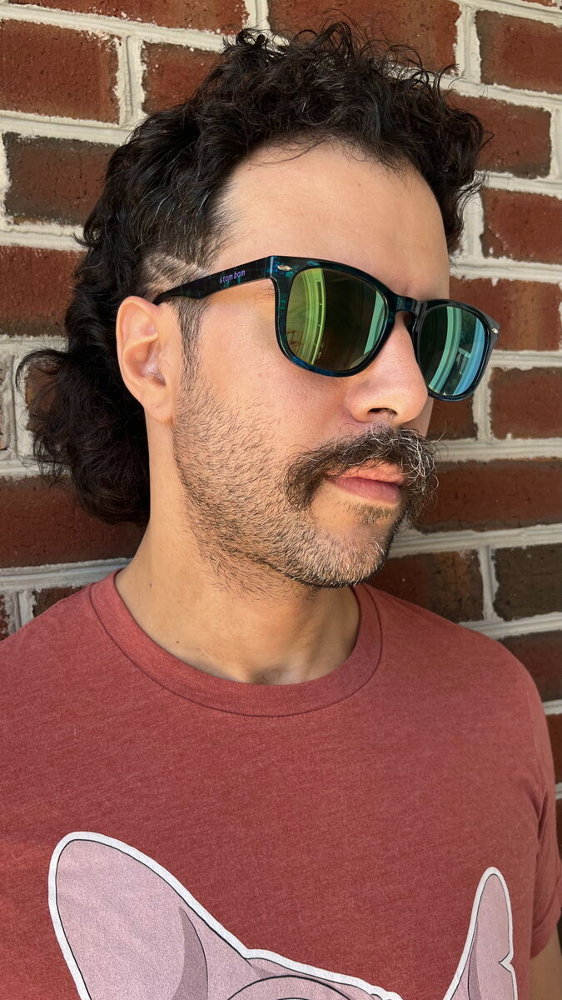

About

Tom Fattah is a multidisciplinary artist originally from New York, but currently residing in Richmond, VA. Born to two immigrant parents, he was originally encouraged to pursue the American Dream by working as a pharmacist. When he came of age, he realized the American Dream was no dream at all and, through much introspection, came to realize life was better living authentically and making art. As a child, Tom could not put the pencil down, and he yearned to return to that life. This discovery led him to pursing art once again in his 30s.
Tom is inspired by art nouveau, Japanese woodblock prints, video games, Saturday morning cartoons, and things from the old world before planned obsolescence had been conceived. He is inspired by the flaws inherent in everything, viewing them as the thing that gives them their true beauty. He makes art about nature, imperfectly. He believes in the beauty of slowing down and taking in all of the details.